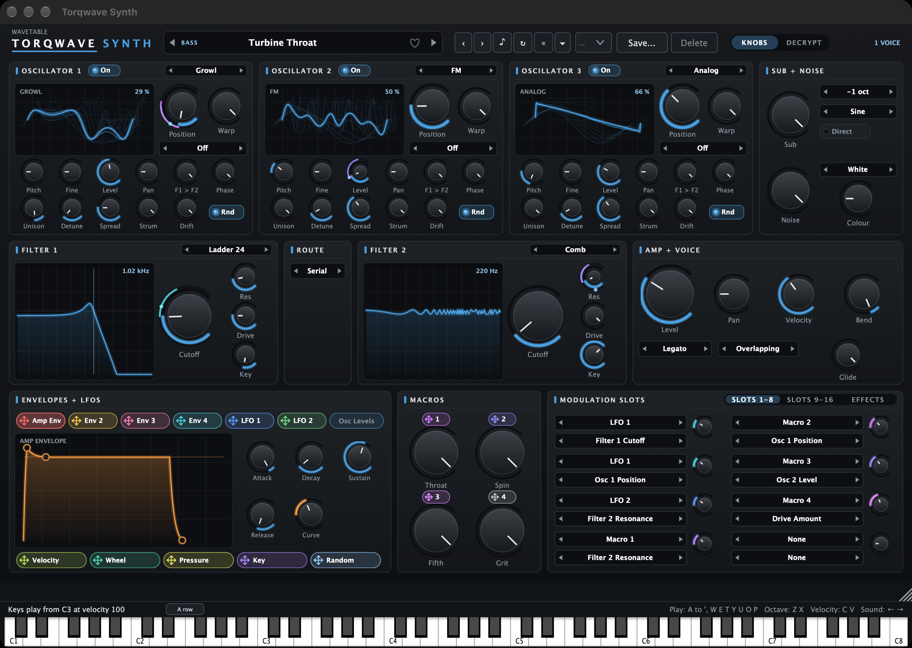
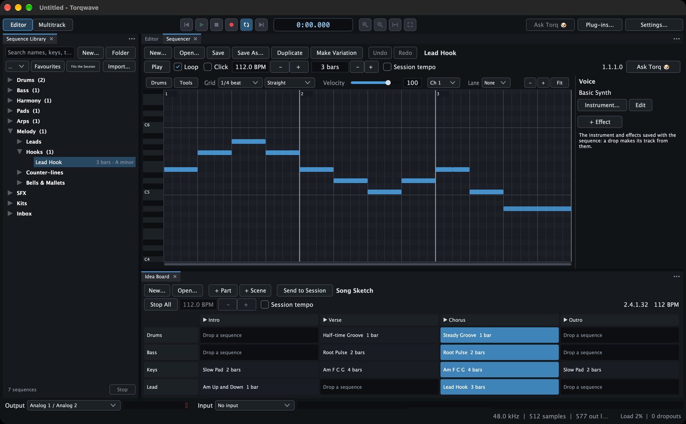
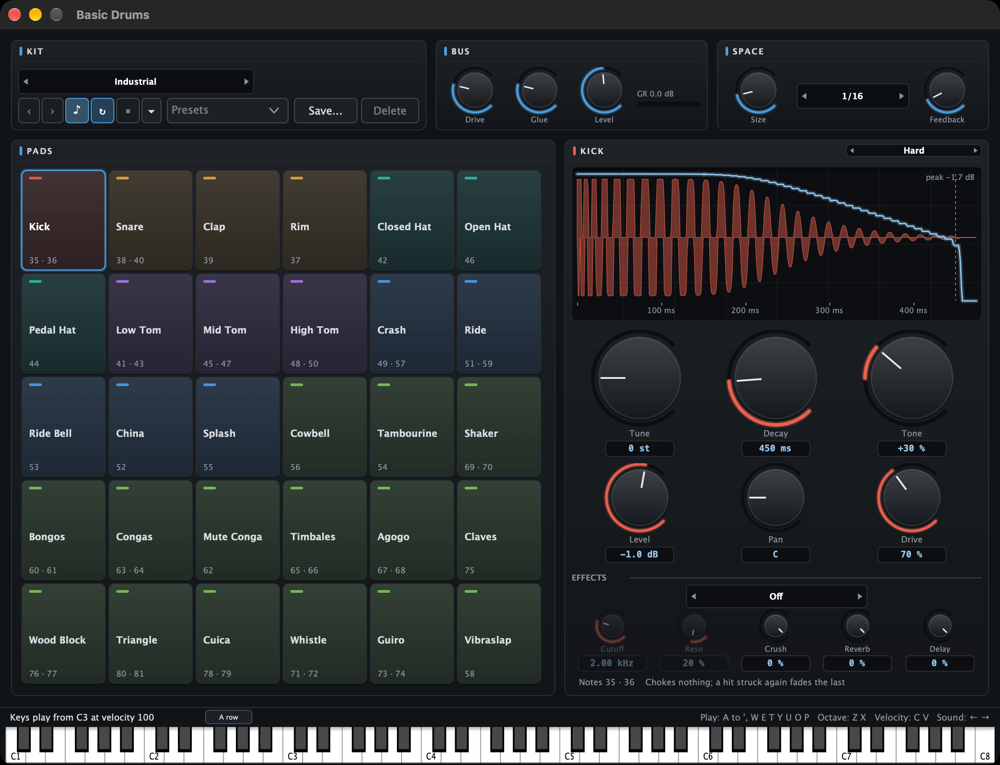

TORQWAVE
An audio editor and a DAW in one: for sound design, for writing and producing music, and for working to picture.
Free and open source, for macOS, Windows and Linux. Edit a file down to its spectrum, repair and master it, then build a session around it with instruments, a piano roll, automation and video, without leaving the program.

New in 0.20.0
Built-in instruments worth playing, and something to play on them.
Torqwave Synth
Three wavetable oscillators with warps and unison, a sub and noise, two filters, four envelopes, two LFOs, sixteen modulation slots, four macros and a rack of effects. Drop any sound on an oscillator and it becomes that oscillator's wavetable.
Decrypt
Drop a recording of one note, or a chord, on the synth's Decrypt page and it searches for a patch that plays like it: a chain of steps you can hear, up to eight different candidates to choose from, and a Decrypted page that keeps the ones you take, by category.
Torqwave Sampler
Your own sounds across the keys, in zones with loops and crossfades, or cut into slices at their hits with each piece on its own key. Straight from the editor's selection or a clip in a session.
StringSwarm
A guitar with every string tuned to the note you play, through a fuzz or a crunch amp, or a swarm of oscillators in place of the strings: one note becomes a wall.
Basic Drums
Thirty sounds on pads, each with its own tune, decay, tone, drive and effects, in seven kits that cover every General MIDI drum.
Play and audition
Play any instrument from the computer's keys. Audition plays each sound as you choose it, with 85 phrases to judge it by, in the session's tempo.



The editor
For one file at a time, down to the single sound inside it.
Waveform and spectrum
Cut, paste, mix and fade on the waveform, or select a sound by frequency on the spectrogram with a box, a lasso or a brush, and edit only that.
Repair
Heal a click or a cough out of the spectrum, reduce noise, hum and clipping, and rebuild the highs of dull, band-limited audio.
Loudness and mastering
Measure and match a loudness target, check a file against delivery specs, and finish a master with EQ, dynamics and a limiter.
Effects and plug-ins
Built-in effects with presets and a live rack, and your VST3 plug-ins, with Audio Units on the Mac and LV2 on the Mac and Linux.
Pitch and time
Stretch and shift a selection, correct a voice or a solo line to a scale or note by note, and smear a sound into a pad with an extreme stretch.
Sound Library
Index, search and audition a large effects collection, and drag what you find straight into a file, a session or the sampler.

Multitrack sessions
The DAW half, with the editor's tools reaching into every clip.
Tracks, clips and crossfades
Audio and instrument tracks, folders, buses and sends, VCA faders, takes and comping, and crossfades you shape on the lane or in an editor of their own.
Piano Roll and Sequencer
Write notes in the Piano Roll with a drum grid and controller lanes, or start from the Sequencer and the Idea Board with 1,018 factory presets.
Mixer and automation
A mixer with effects on every track and bus, plug-in latency lined up, ducking, and automation drawn or written live for volume, pan and any setting.
Tempo
Sessions count in bars and beats; clips can follow the tempo with warp markers, and instruments and plug-ins get the tempo and playhead.
Video and surround
Edit to picture, write the sound back into the video, and work in 5.1 or 7.1 files and sessions.
Out the door
Mix down, bounce and freeze tracks, export stems, and save a project that keeps every file's undo history.


Instruments and sound
Built in, so a session plays the same on any computer with Torqwave.


And more
- Ask Torq (experimental, off by default): edits from a sentence, planned by a language model you run yourself on any server that speaks the OpenAI-compatible API. Nothing leaves your computer unless you point it elsewhere.
- Recording: into a file or onto tracks, with punch-in, monitoring, a metronome and loop takes.
- Yours to arrange: dockable panels, workspaces, ten themes and every key changeable.
- A guide in the app: Help > User Guide carries the whole user guide, pictures and all.
- Honest about itself: a feature matrix against fifteen other editors and DAWs, showing what Torqwave lacks as plainly as what it has, and a changelog that says what was measured and what was not tried by hand.